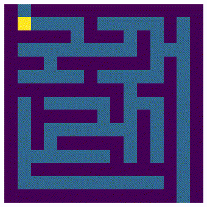

Beat Mazes with Reinforcement Learning
RL is a blooming field at the moment. In my opinion, it has the most potential to become a general AI. But the main idea behind RL is actually simple and straight forward. In this blog post let’s build a RL agent that can beat randomly generated mazes to demonstrate this idea.
Generate Random Maze
To start, we need a maze. And honestly manually draw maze is pretty painful, therefore we are going to generate one randomly. There are many algorithm that can generate mazes: Depth-first search, Recursive backtracker, Randomized Kruskal’s algorithm and etc.
I have picked a visually pleasing one: Recursive division method. It divides an empty zone into four zones, and then add 3 passages to the walls we just added, which makes sure all the zones are connected. Then divide all the sub-zones recursively until the zone is too small.
def generate_maze(shape, random=np.random):
# make map: 1 means passage and 0 means wall
data = np.ones(shape)
# create enclosing wall
data[[0, -1], :] = 0
data[:, [0, -1]] = 0
def rnd(*arange, grp=0):
space = np.arange(*arange)
space = space[space % 2 == grp]
return random.choice(space)
def proc(data):
w, h = data.shape
assert w % 2 == 1 and h % 2 == 1, 'Maze size can only be odd number!'
if w >= 3 and h >= 3:
# divide into 4 zones
x = rnd(w, grp=1)
y = rnd(h, grp=1)
data[x, :] = 0
data[:, y] = 0
passages = np.array([
(rnd(x), y),
(rnd(x + 1, w), y),
(x, rnd(y)),
(x, rnd(y + 1, h)),
])
data[tuple(passages[random.choice(4, size=3, replace=False)].T)] = 1
# divide subzones
proc(data[:x, :y])
proc(data[x + 1:, :y])
proc(data[:x, y + 1:])
proc(data[x + 1:, y + 1:])
# set entrance and exit
data[[0, -1], [1, -2]] = 1
# add internal walls
proc(data[1:-1, 1:-1])
return dataHere is an maze output for dimension 101, 101.

Make a Simulation Environment
In RL, we educate our agent by stick and carrot. If an agent have done something right we give it a positive reward, if not we punish it by a negative reward. The goal of an agent is to maximize the sum of discounted rewards.
In our maze world, every step the agent is receiving a small negative reward, which will encourage the agent the find the shortest way to the exit. When agent arrive the exit, it will not able to receive any future punishment after that. Therefore the optimization algorithm will try to find a fastest way to end its suffer.
class SimpleMazeWorld:
def __init__(self, shape, random=np.random):
self.shape = shape
self.data = generate_maze(shape, random=random)
self.rewards = np.ones(shape) * -.1
self.rewards[-1, -2] = 0
# We can have many way of ending, for example: a trap that agent falls in and can never get out.
self.terminals = np.array([(self.shape[0] -1, self.shape[1] -2)])
self.reset()
@property
def state(self):
"convience function for calculate the state"
return np.ravel_multi_index(self.pos, self.shape)
def reset(self):
"reset agent after episode ends"
self.pos = [0, 1]
return self.state
def step(self, action):
"interactive step"
assert action >=0 and action <= 3, 'Where are you going?'
# convience functions
def is_done():
return (self.pos == self.terminals).all(axis=1).any()
def reward():
return self.rewards[self.pos]
if is_done():
# agent can not receive any reward after it arrive the exit
return self.state, reward(), is_done(), {}
else:
x, y = self.pos
w, h = self.shape
dx, dy = [
(-1, 0), (+1, 0), (0, -1), (0, +1),
][action]
# make sure our agent does not move off grid or into walls
xp = np.clip(x + dx, 0, w - 1)
yp = np.clip(y + dy, 0, h - 1)
if self.data[xp, yp] == 1:
x = xp
y = yp
self.pos = x, y
return self.state, reward(), is_done(), {}Make a Agent with Q Learning
As stated before, the goal of an agent is to maximize sum of discounted rewards. The first question we need to answer is how to measure a given policy \(\pi\), as if we can’t measure it, we can’t manage it.
The most straight forward way is to use expected discounted sum of rewards to measure the quality of policy \(\pi\).
\[ \begin{aligned} v_\pi(s) &= E_\pi[R_{t+1} + \gamma R_{t+2} + \dots + \gamma ^N R_N] \\ &= E_\pi[R_{t+1} + \gamma v_\pi(S_{t + 1}) \vert S_t = s, A_t = \pi(s)] \\ where & \\ & R_t \text{ is the reward received at time } t \end{aligned} \]
However knowing \(v_\pi\) alone is not enough, as an agent only know with policy \(\pi\) which state it want to be in the most. But it does not know which action to take to be in that state. Therefore we need another function:
\[ q_\pi(s, a) = E[R_t + \gamma v_\pi(S_{t+1}) \vert S_t = s, A_t = a] \]
That is an agent take an arbitrary action at time \(t\), and then use \(\pi\) to make subsequence decisions. Then to obtain the optimal policy \(\pi_*\), all we need is to have a function:
\[ \begin{aligned} q_*(s, a) &= \underset{\pi}{\max}q_\pi(s, a) \\&= E[R_{t + 1} + \gamma \underset{\pi}{\max} v_\pi(S_{t + 1}) \vert S_t = s, A_t = a] \\&= \underset{s', r}{\sum}p(s', r| s, a)[r + \gamma \underset{\pi}{\max}v_\pi(s')] \\&= \underset{s', r}{\sum}p(s', r| s, a)[r + \gamma \underset{a'}{\max}q_*(s', a')] \end{aligned} \]
Which is also called Bellman optimality equation for \(q_*\). And yes, that is also where the name Q in Q Learning comes from. Now, we should have enough math to implement the Q learning agent.
random = np.random.RandomState(12345)
shape = (15, 15)
env = SimpleMazeWorld(shape, random)
# we are using linear epsilon decay strategy
espilon_space = np.linspace(1, 0.05, 1000)
Q = np.zeros((np.product(shape), 4))
# we don't actually need that many iterations, feel free to reduce it.
nepoch = 2000
# we don't want a single episode takes too long
max_steps = 300
# discount factor
gamma = 1
# learning rate
alpha = 0.05
for epoch in tqdm(np.arange(nepoch)):
state = env.reset()
epsilon = epsilon_space[np.clip(epoch, 0, epsilon_space.shape[0] - 1)]
for i in np.arange(max_steps):
if random.random() < epsilon:
action = random.choice(4)
else:
space = np.arange(4)[Q[state, :] == Q[state, :].max()]
action = random.choice(space)
next_state, reward, is_done, _ = env.step(action)
# Bellman optimality equation
expected = reward + gamma * Q[next_state, :].max() * (1 - is_done)
# this is something actually simmiliar to gradent descend
Q[state, action] += alpha * (expected - Q[state, action])
if is_done:
break
state = next_stateAfter the model trained, here is how our agent behaves:

Learn More
In this post, I have brief explained the idea behind RL. If you are interested and would like to read more about it, please checkout Sutton and Barto’s Book.